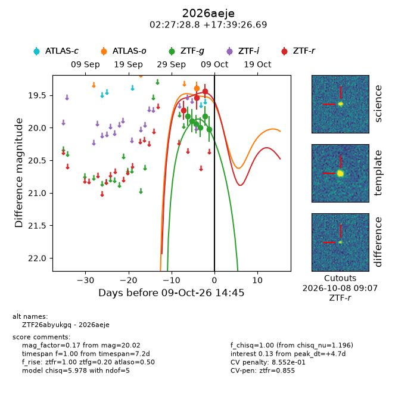
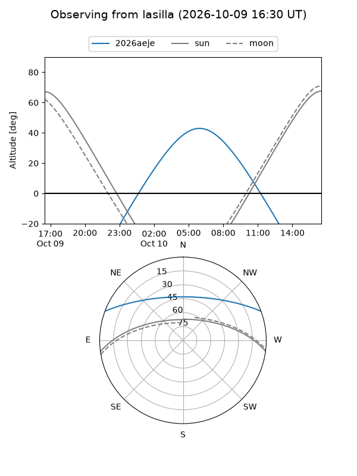
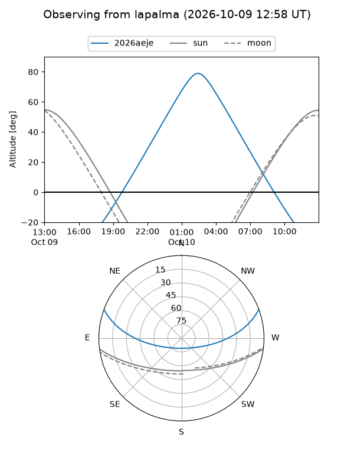
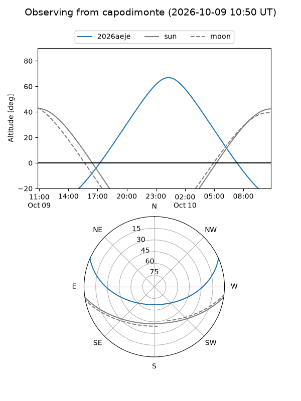
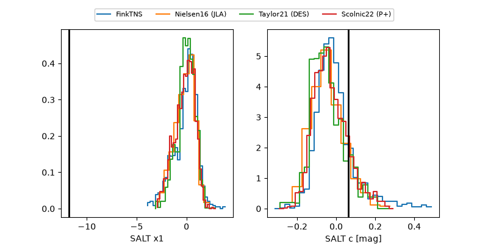

2026aeje
Target 2026aeje at 2026-10-09 14:46
Aliases and brokers:
FINK-ZTF: ztf.fink-portal.org/ZTF26abyukgq
Lasair-ZTF: lasair-ztf.lsst.ac.uk/objects/ZTF26abyukgq
ALeRCE-ZTF: alerce.online/object/ZTF26abyukgq
YSE-PZ: ziggy.ucolick.org/yse/transient_detail/2026aeje
TNS name: wis-tns.org/object/2026aeje
Direct TNS query: direct search
alt names
ZTF26abyukgq (ztf,fink_ztf)
2026aeje (tns,yse)
Coordinates:
equatorial (ra, dec) = 36.8700,+17.65741
equatorial (HMS+DMS) = 02:27:28.80,+17:39:26.69
galactic (l, b) = (153.1070,-39.52131)
Flags:
peak dt: +4.7
likely cv: !!
CV pen: 0.8552499338032193
Photometry:
last atlaso=19.39, ztfg=20.02, ztfr=19.44
1 atlaso, 6 ztfg, 3 ztfr detections
Lightcurve

Visibility



Additional plots
